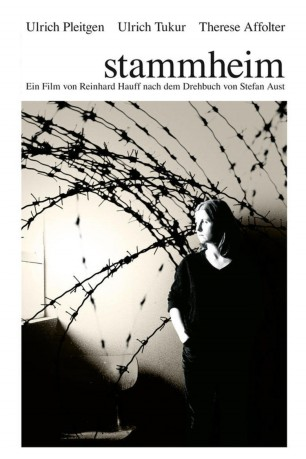

#4812 Stammheim - Die Baader-Meinhof-Gruppe vor Gericht
Alternativ: Stammheim - Die Baader-Meinhof-Gruppe vor Gericht
 
 IMDB-Wertung: 7.0 / 10
IMDB-Wertung: 7.0 / 10  Metascore: 0
Metascore: 0 
Die Bundesrepublik im Mai 1975: Nachdem sie drei Jahre in Isolationshaft im Hochsicherheitsgefängnis von Stammheim verbracht haben, beginnt unter Leitung des Richters Foth der Mordprozess gegen die vier führenden RAF-Terroristen Andreas Baader Ulrike Meinhof Gudrun Ensslin und Jan-Carl Raspe Schon zu Beginn des Prozesses, der von den Angeklagten als Schauprozess bezeichnet wird, gibt es jedoch die ersten Probleme. Die Angeklagten treten gemeinsam in einen Hungerstreik und verweigern jegliche Aussage, um bessere Haftbedingungen zu erreichen. Der Vorsitzende und der gesamte Justizapparat insgesamt sind mit dem Fall absolut überfordert und es beginnt ein fast zweijähriger Justizalbtraum für alle Beteiligten, der schließlich mit dem Tod der Angeklagten endet…
Jahr: 1986
Dauer: 102 Minuten
FSK: 16
Land: West-Deutschland Studio: Futura Film, MunichTonspuren:
Untertitel:
Auflösung: 720p (1280x720) Größe: 4085 MB
Genre: Krimi, Drama
Regisseur: Reinhard Hauff
Drehbuch: Christopher Knopf
Soundtrack:
Darsteller:
 Ulrich Tukur als Andreas Baader
Ulrich Tukur als Andreas Baader- Ulrich Pleitgen als Presiding Judge
- Therese Affolter als Ulrike Meinhof
- Sabine Wegner als Gudrun Ensslin
- Hans Kremer als Jan-Carl Raspe
- Hans Christian Rudolph als Defense Attorney
- Peter Danzeisen als Defense Attorney
- Holger Mahlich als Defense Attorney
- Marina Wandruszka als Defense Attorney
- Horst Mendroch als Bundesanwalt
- Günther Flesch als Bundesanwalt
- Fred Hospowsky als Neuer Gerichtsvorsitzender
 Hans-Michael Rehberg als Siegfried Buback - Generalbundesanwalt
Hans-Michael Rehberg als Siegfried Buback - Generalbundesanwalt- Angela Buddecke als Zeugin
- Dominique Horwitz als Zeuge - RAF-Aussteiger
- Peter Maertens als Pflichtverteidiger
- Matthias Brambeer als Pflichtverteidiger
- Günther Heising als Zeuge
- Rainer Philippi als Zeuge
- Circé als Zeugin
- Eric Schildkraut als Zeuge
- Klaus Schreiber als Zeuge
- Michael Schönborn als Zeuge
- Silvia Fenz als Zeugin
- Lothar Rehfeldt als Zeuge
- Alexander Duda als Reporter
Datei: X:\1986\Stammheim - Die Baader-Meinhof-Gruppe vor Gericht (1986, FSK16, 1280x720).mkv seit 18.11.2016
Festplatte: HD 1980-1986
 Es gibt insgesamt 50 Filme in der Gruppe '1986'
Es gibt insgesamt 50 Filme in der Gruppe '1986'